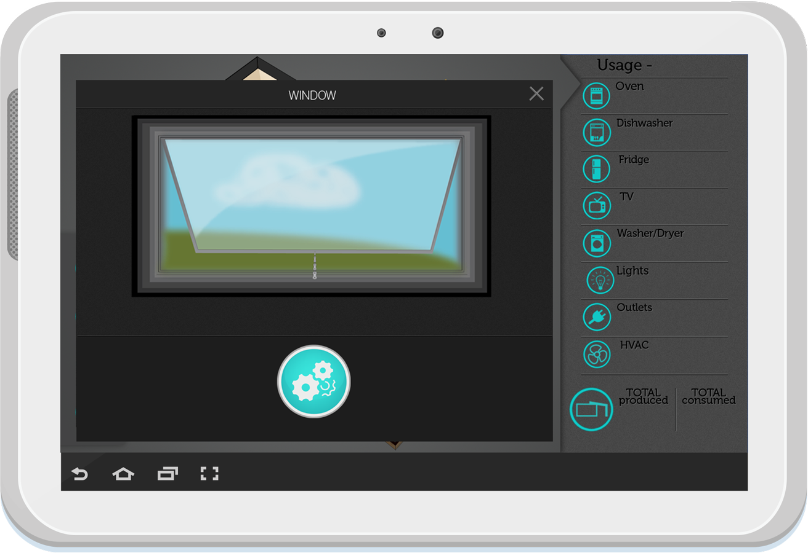

Mobile app design
The Specs
- UX & UI design
- Iconography and visual language development
- Print & graphic design
The Need
The need for this project was an application that allows the user to control lights, windows and the temperature of their Echo Smart Home while keeping the interface simple and easy to learn during its first use.
The Solution
The solution was to keep the navigation flat while giving the user as much information as possible. Using a visual language for the interface allows for a quick user learning process and controls that makes sense to the users surroundings. Visual states makes it easy for the user to tell which settings are on and off at a glance, while keeping the visuals accessible to all users.
Interface Design



Print Info Poster